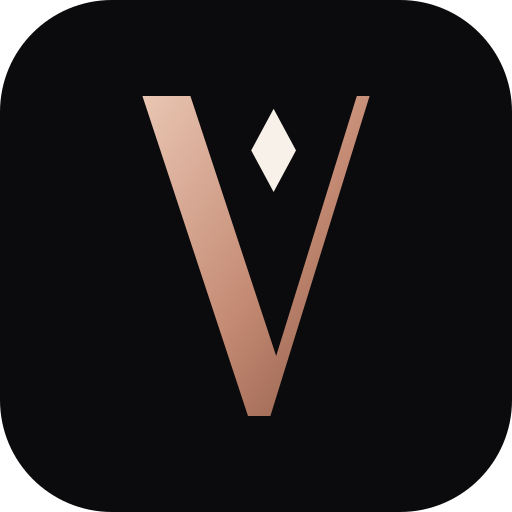

Quiet luxury for personal style. Obsidian ground, rose-gold light, and typography that whispers rather than shouts.
01 · Identity
Wordmark & monogram
Custom high-contrast capitals: thick stems, hairline diagonals, no serifs, generous tracking. The facet in the monogram stands for insight revealed from a single selfie.
vysel-wordmark-porcelain.svg · primary on darkvysel-wordmark.svg · primary on lightvysel-wordmark-rose-gold.svg · hero moments onlyvysel-monogram.svg

vysel-app-icon.svg · favicon.svg (heavier hairline for 16px)
02 · Colour
Obsidian, porcelain & rose gold
One accent, used sparingly. About 90% obsidian or porcelain, 8% neutral steps, 2% rose gold. Values below are read live from tokens.css.
Semantic pairs · live contrast (Obsidian)
Pair
Sample
Ratio
WCAG
03 · Typography
Three voices
Cinzel announces (caps only, short). Cormorant Garamond narrates (editorial headings, the "why it suits you"). DM Sans works (all UI, body, data).
.vy-display · Cinzel
Style DNA
.vy-h1 · Cinzel
Your palette
.vy-h2 · Cormorant
Meet your personal Style DNA
.vy-h3 · Cormorant
Soft layers, long waves
.vy-h4 · Cormorant
Why it suits you
.vy-lead · Cormorant italic
Balanced proportions suit most cuts, and soft, muted shades suit a neutral undertone.
.vy-body · DM Sans 16
Upload one selfie and set your budget. VYSEL estimates your face shape and undertone, then ranks hair, eyewear and makeup picks, each with a short reason.
.vy-overline · DM Sans 11
Face shape · estimate
.vy-caption · DM Sans 14
Estimates from a single photo. Lighting and camera can shift results.
04 · Foundations
Space, shape & motion
Spacing · 4px base
Radii · restrained, tailored
xs 2 · controls
sm 4
md 8 · cards
lg 16 · modals
pill · badges
Elevation
--vy-shadow-sm
--vy-shadow-md
--vy-shadow-lg
--vy-shadow-glow
Motion · click to play
Set Motion → Reduced to see the reduced-motion behaviour.
05 · Components
Buttons
One primary action per view. Labels are uppercase, tracked and short (one to three words).
Cards
Gilded is reserved for Style DNA moments; never more than one per view.
Default
Hair
Soft layers and long waves complement balanced proportions.